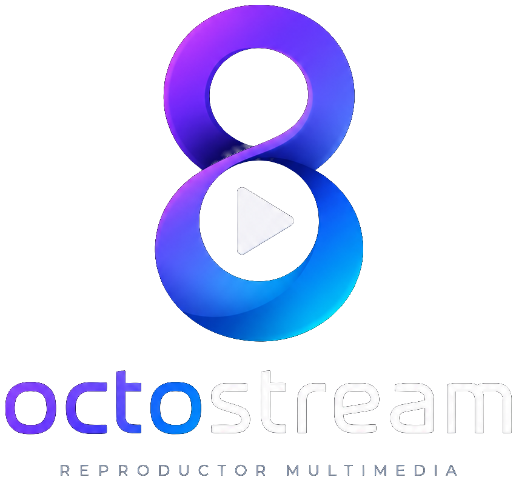

Películas, series, anime, deportes en directo, canales y torrents — optimizado para Android y Android TV con reproductor nativo ExoPlayer.
¿No sabes cuál elegir? El botón principal (arm64) cubre el 95% de móviles y TV boxes modernos.
Navegación pensada para el mando a distancia, reproductor nativo y descubrimiento automático entre dispositivos.
Media3/ExoPlayer con HLS, DASH, MP4, subtítulos y DRM. Teclas multimedia del mando: play/pausa, rebobinar y avance rápido.
Navegación D-pad con foco visible, salvapantallas, zap de canales en directo y gestión correcta del botón atrás.
Agenda de fútbol, tenis, baloncesto, F1 y más — con escudos, fotos de jugadores y enlaces a los streams disponibles.
Los dispositivos OctoStream se descubren solos en tu red. Cada uno tiene nombre propio y emparejamiento con código de verificación.
Reproducción directa de magnet links y archivos torrent con jlibtorrent, sin apps externas.
Sistema de plugins con catálogos, búsqueda unificada, historial, favoritos y reanudar donde lo dejaste.
La app no está en Google Play — se instala descargando el APK. Una vez instalada, se actualiza sola desde la app.
Pulsa el botón de descarga de arriba (arm64 para casi todos los dispositivos).
Android pedirá permiso para instalar apps desde el navegador o gestor de archivos. Acéptalo solo para esta instalación.
Abre el APK descargado y pulsa Instalar. En Android TV puedes pasarlo con Send Files to TV, LocalSend o un USB.
La app comprueba nuevas versiones al abrirse y te ofrece instalarlas con un toque.
OctoStream es un navegador y agregador de enlaces. No aloja, almacena ni distribuye ningún contenido: todo el material proviene de fuentes públicas ya disponibles en Internet y es responsabilidad exclusiva de los sitios de terceros que lo sirven. El uso de la app y el acceso a los contenidos enlazados son responsabilidad del usuario. Si eres titular de derechos y quieres retirar un enlace, contacta con la web que aloja el contenido.